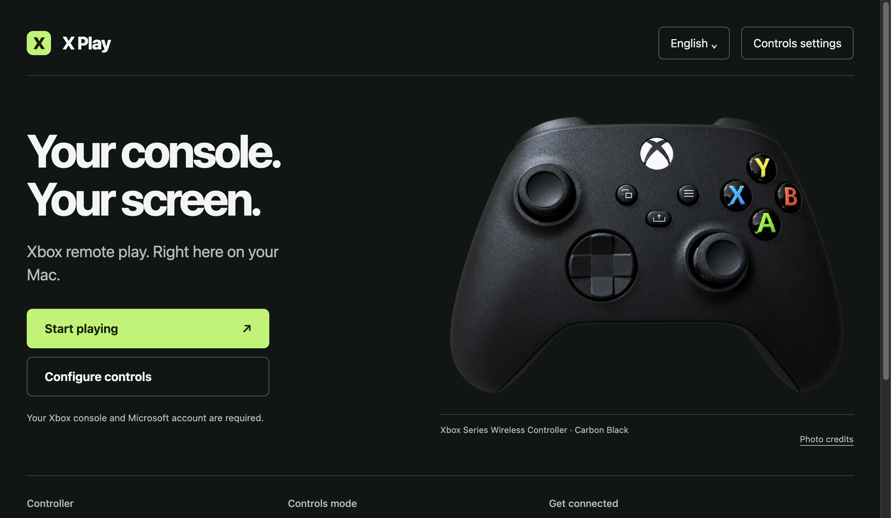

INPUT
Choose your controls
Physical controllers remain available. Keyboard and mouse mode starts only when you click the capture button on the game page. Escape releases the mouse.
INDEPENDENT XBOX REMOTE PLAY LAUNCHER
Open Xbox Remote Play in a dedicated macOS window. Use a physical controller, or choose a keyboard and mouse profile with explicit mouse capture.
1.2.0 preview · device testing not performed
The 1.2.0 preview is available below. It includes the new responsive launcher, transparent controller photo and optional support dialog; real Xbox gameplay acceptance is still pending.

INPUT
Physical controllers remain available. Keyboard and mouse mode starts only when you click the capture button on the game page. Escape releases the mouse.
PROFILES
Map keys, change sensitivity and invert the vertical axis. Profiles can be saved, exported and validated on import. Changes apply to the next game window.
PERMISSIONS
Remote pages do not receive Node.js access. Navigation is restricted to the supported Xbox and Microsoft sign-in origins. Microphone requests are off by default.
RELEASE STATUS
The 1.2.0 preview targets macOS on Apple Silicon (ARM64). Local launch and controls checks are separate from real Xbox gameplay acceptance. Intel Mac, Windows, Android and Linux packages are not offered by this project.
The package has an ad-hoc signature. Apple Developer ID signing and notarization are not available. Verify the release and its checksum before opening a downloaded app. A “damaged” message can also indicate a bad download; do not disable macOS protection as a routine installation step.
Apple Silicon ARM64 · ad-hoc signed · 118.0 MiB. Published without physical-device acceptance.
Download ARM64 DMGSHA-256: a6e3091bc178c224ba5ebdf373d6d830fa861ab1f1823ca713d9053d5c9ae4bd
Release notes and sourceOlder macOS package. It predates the controller loop, input ownership and security fixes described above.
1.0.0 DMG · legacy packageSHA-256: 667686f3bcd4841a1df23ace4815e8514c278794a61b9c15bd65ed809f3a0f9c
Remote Play requires a compatible Xbox, its remote features and a Microsoft account. Service availability, subscriptions and network conditions belong to Microsoft's service. Latency depends on the full connection; no zero-latency or universal game compatibility is claimed.
Sign in on the Microsoft page yourself. For a connection failure, keep the error message and check the official Xbox service in your browser before retrying. Support reports should exclude account data and tokens.
Installation and limitations